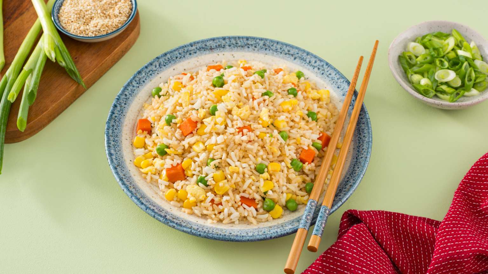

Good o' fried rice. Best made using a couple-of-days-old rice.
Recipe SourceTurn your skillet to medium high heat and pour sesame oil into the bottom of your skillet and add the onion, peas and carrots. Fry this until they are tender.
Pour the beaten eggs onto the other side. Use a spatula to scramble the eggs. Mix them together with the veggies.
Combine it with the veggie and egg mixture. Pour the soy sauce on top and stir until it is heated throughout. Garnish with green onions.